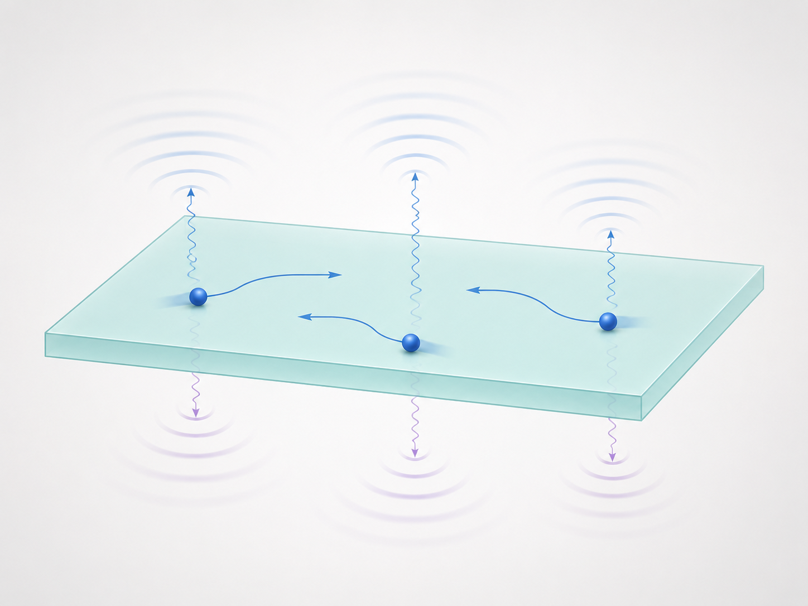

Academia
Quantum Materials and Quantum Information
My expertise lies in theoretical condensed matter physics, nonlinear responses, superconductivity, quantum geometry, and system dynamics away from equilibrium. My current primary interest is how quantum materials and their quantum-geometric properties can be used to store, process, and transform information.

Research Overview
Today, I research and implement realistic material modeling beyond equilibrium and beyond simple nonlinear physics. My recent work shows how interactions and driving reshapes electronic response in superconductors [1], and how Kramers doublets, whose symmetry constrains relaxation, can be selectively controlled and populated [2]. These ideas sound academic, but they point toward concrete devices and applications: nonlinear detectors, symmetry-protected optical storage, and quantum-material platforms for information processing. More details are organized below.
More to come: a Berry-curvature-dipole-based parity-protected storage unit.
Selected Works
[1] Superconducting Berry Curvature Dipole
Quantum-geometry controlled dissipationless Hall effect in nonreciprocal superconductors has two origins: parent material and interactions.
[2] Kramers Dichroism in PT-Symmetric Magnets
Optical excitation of coherent Kramers degrees of freedom in PT-symmetric magnets controls unusual interlayer photocurrent in the heterostructure.
[3] The Floquet Fermi Liquid
A nonequilibrium metallic state with emergent layered Floquet Fermi surfaces that manifests through frequency beating of quantum oscillations.
[4] Nonlinear Hall Acceleration and the Quantum Rectification Sum Rule
The Berry curvature dipole, which defines the nonlinear Drude weight of Bloch electrons, controls the Fermi-surface contribution to the Quantum Rectification Sum Rule.
Research Directions
Superconductivity, Quantum Geometry, and Quantum Information
Superconductivity is a collective quantum phenomenon, while Berry curvature and quantum geometry are often described using a single-particle picture. My recent work challenges this separation. I study how interactions shape nonlinear responses in correlated materials, revealing the importance of many-body quantum geometry and identifying when it becomes the dominant contribution [1]. I also explore how light modifies supercurrent phase relation, exposing a light-controlled superconducting diode [5], and how a superconductor's magnetization can be used for quantum-information applications [6].
- [1] Superconducting Berry Curvature DipolePublished in PRLarXiv
- [5] Superconducting Photocurrent and Light-Enriched Supercurrent Phase RelationPreprint on arXiv
- [6] Nonlinear Superconducting Magnetoelectric EffectPublished in PRLarXiv
- Confidential ongoing direction: superconducting quantum information with quantum-material nonlinearities. Public summary coming later.
Nonlinear Response, Open Quantum Systems, and Applications
People sometimes ask why nonlinear responses matter if they are subleading. There are several answers. Sometimes they are not subleading. Sometimes they are directly isolated through harmonic generation or rectification. And sometimes they reveal hidden material physics that is invisible in linear response [4].
A simple example is photovoltaic response. A material driven by light can experience fields oscillating at enormous optical frequencies. The linear response oscillates with the drive, while second-order response can contain a static component. In this sense, DC photocurrent generation is fundamentally nonlinear [7, 9, 11].
Another example appears in time-reversal-symmetric materials. Without a magnetic field or magnetization, the linear DC Hall effect vanishes. But this does not mean that Hall-like transport is absent: in noncentrosymmetric materials, a nonlinear Hall effect can still be present, controlled by the Berry curvature dipole [4, 13].
Several predictions in this area of my scientific interest are being tested experimentally or have motivated ongoing measurements, including Rabi-regime rectification [8], interlayer photocurrents in van der Waals heterostructures [11], superconducting Berry-curvature-dipole effects [1], and Floquet Fermi surfaces [3, 12, 14].
- [4] Nonlinear Hall Acceleration and the Quantum Rectification Sum RulePublished in PRLarXiv
- [7] The Berry Phase Rectification Tensor and the Solar Rectification VectorPublished in Journal of Physics DarXiv
- [8] Rabi Regime of Current Rectification in SolidsPublished in PRLarXiv
- [9] The Berry-Dipole Photovoltaic Demon and the Thermodynamics of Photocurrent Generation Within the Optical Gap of MetalsPublished in PRBarXiv
- [10] Fermi-Dirac Staircase Occupation of Floquet Bands and Current Rectification Inside the Optical Gap of MetalsPublished in PRBarXiv
- [11] Layer Photovoltaic Effect in van der Waals HeterostructuresPublished in PRBarXiv
- [3] The Floquet Fermi LiquidPublished in PRLarXiv
- [12] Ultra-Critical Floquet Non-Fermi LiquidPublished in PRLarXiv
- [13] Nonequilibrium Exchange Nonlinear Hall EffectPreprint on arXiv
- [14] High-Temperature Quantum Oscillations of a Nonequilibrium Non-Fermi LiquidPublished in PRBarXiv
Kramers Physics and Symmetry-Protected Degrees of Freedom
PT-symmetric magnets host Kramers-degenerate states. My work in this direction asks how to address these states, populate them, and control inter-state Kramers coherences [2]. This opens a route to internal electronic degrees of freedom for energy-efficient devices.
- [2] Kramers Dichroism in PT-Symmetric MagnetsPublished in PRRarXiv
Quantum Gases and Topological Superfluidity
Earlier work focused on ultracold atomic systems, Josephson analogues, acoustic horizons, and p-wave superfluidity. These projects connect many-body theory, topology, and controllable quantum simulation [15, 16].
- [15] Analogues of Josephson Junctions and Black Hole Event Horizons in Atomic Bose-Einstein CondensatesPublished in Low Temperature PhysicsarXiv
- [16] p-Wave Superfluidity in Mixtures of Ultracold Fermi and Spinor Bose GasesPublished in PRAarXiv
Documents and Talks
Profiles
Academic contact
Opportunities and discussion
I am currently employed as a Research Fellow and am not actively seeking new academic collaborations or recruiting researchers. If I obtain a faculty position and research funding, opportunities will be announced here and in the News section.
I remain open to scientific discussion and selected advisory work. My current interests include quantum-material applications, quantum information, and AI-assisted methods for quantum physics.
If you believe my background could be a strong fit for a permanent position at your institution, please feel free to contact me at oles.matsyshyn@gmail.com.
Rights and Attribution
Academic papers linked on this page are governed by the copyright and licensing terms of their respective journals, publishers, and preprint repositories. This page provides portfolio summaries, links, and original commentary by Oles Matsyshyn. Unless otherwise stated, the website text and presentation material are © Oles Matsyshyn.